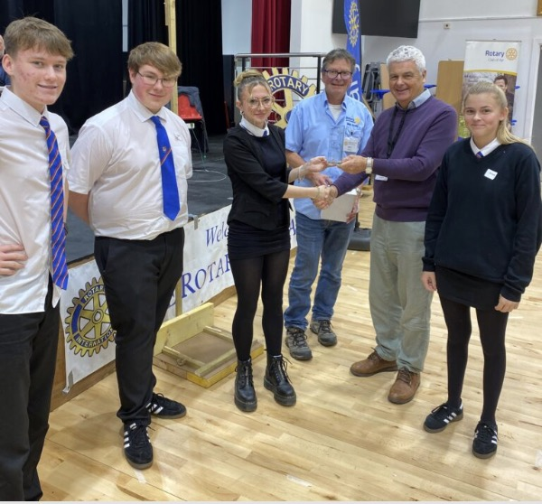

Thinking of joining Rotary?
Information for potential new members
What happens to you as a new member?

Well, there are no strange membership rites, so you do not have to worry about that. You will already have discovered elsewhere on this site what the activities of the club are - new members are encouraged, and indeed expected, to get involved.
The Rotary movement is based on friendship, so one of the first things is to get to know the other members - both around the membership and at the meetings and talk to them.
The club has an interesting programme of speakers at the various meetings, but the real work of the club takes place in the committees and in the community. Every new member is placed in one of the committees and expected to get involved by having ideas and taking part in the work.
The committees, by and large, meet in the homes of members over a glass of wine in the evening - a social event. As a new member you may become involved in community service work, international service, youth service, or organising club sports or social events.
Later on there may be involvement in the management of the club, membership of the Council, the governing body of the club, or as a club officer or committee convener. These roles in the club tend to be for three-year periods.
Although an individual is president for only one year, there is a three-year commitment as Vice President, President Elect and, finally, President.
Rotary is a lot of fun and fellowship, and taking part in the work of the club brings a great sense of having achieved something that is truly worthwhile. Lifelong friendships develop.